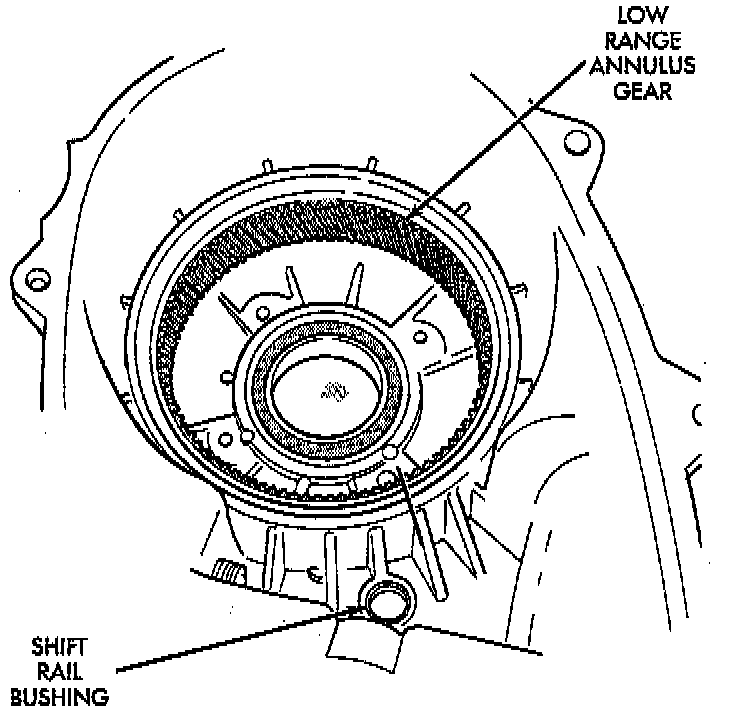

Cleaning and Inspection
GENERALClean the transfer case components with parts cleaning solvent. Flush the oil passages in the cases and drivetrain components with solvent. This will help remove dirt and particles from these passages.
Dry the transfer case components with compressed air or allow them to air dry on clean shop towels.
Apply compressed air through all oil passages in the cases and gear components to clear them of any residue.
MAINSHAFT
Examine the mainshaft components carefully for evidence of wear or damage.
Replace the thrust washers if worn or damaged.
Replace the mainshaft and sprocket gears if the teeth or gear bores are worn or damaged.
Replace the mainshaft bearings if worn, flat spotted, brinelled, or damaged in any way.
Replace the mainshaft if it exhibits wear or damage to the bearing surfaces, splines or gear teeth.
INPUT AND LOW RANGE GEARS
Inspect the low range gear pinions and pinion pins. Replace the low range gear if any of the pins or pinions are worn or damaged.
Inspect the thrust washers, retainer, and snap ring. Replace the snap-ring if bent, or distorted. Replace the thrust washers and retainer if worn, cracked or damaged in any way.
Examine the input gear carefully. Be sure the gear teeth and bearing surfaces are in good condition. Replace the gear if wear or damage is evident.
Check the input gear pilot bearing. Rotate the bearing and check for roughness or noise. Also check bearing position in the bore. The bearing should be recessed approximately 2.5 mm (0.100 inch) below the top edge of the bore. The bearing should not be seated at the bottom of the bore. Replace the bearing if worn, or roughness is evident. Replace both the gear and bearing if the bearing is a loose fit in the bore.

GEAR CASE AND RETAINERS
Examine both case halves and retainers carefully. Replace any retainer or case half if wear, cracks, or other damage is evident.
Check condition of the low range annulus gear and the shift rail bushing in the front case. The low range annulus gear is not a serviceable part. Replace the gear and case as an assembly if the gear is loose, worn, or damaged. The shift rail bushing is a serviceable part and can be replaced if necessary.
Check the bushing in the rear retainer. Replace the bushing if worn or scored.
Examine the sealing surfaces of both case halves and retainers. Small burrs, or scratches on these surfaces can be reduced with crocus cloth or a fine tooth file.
Examine condition of the shift rail bushing in the front case. If the bushing is worn or damaged, it can be removed with a blind hole type puller. A replacement bushing can be installed with a suitable size driver. Recess the bushing slightly below the edge of the bore but do not seat it all the into the case.
GEAR-TRAIN
Inspect the mainshaft splines, gear teeth and bearing surfaces carefully for evidence of wear, or damage. Replace the shaft if necessary. do not attempt to salvage it if damaged.
The shift rail and range fork are an assembly. Replace both parts if either is damaged. However, the nylon pads in the fork can be replaced if worn, or cracked.
Inspect the transfer case snap rings closely. Do not attempt to salvage a distorted snap ring by straightening or reshaping it. Replace any snap ring that is distorted, or worn.
Inspect the low range gear, input gear and the gear thrust washers retainer, and snap ring. The low range gear is serviced as an assembly only. Replace the gear if the case or pinions are damaged.
During inspection, also make sure the seal surface of the input gear is in good condition. Minor nicks on this surface can be reduced with crocus cloth. However, replace the gear if the seal surface is severely scored or worn.
The speedometer gear should be replaced if worn, cracked, or if the small spline teeth are worn.
OIL PUMP AND VISCOUS COUPLING
The oil pump and viscous coupling are not serviceable components. Replace the coupling as an assembly if it is leaking or damaged. Replace the oil pump as an assembly if the gear teeth are worn, or if the pump has become damaged.
BEARINGS AND SEALS
The transfer case seals should be replaced during overhaul. Use new seals in the input gear bearing retainer, front case and rear retainer. Also replace the yoke seal washer and the detent plug O-ring.
Check condition of each transfer case bearing. Replace any bearing exhibiting signs of roughness, wear, or damage.